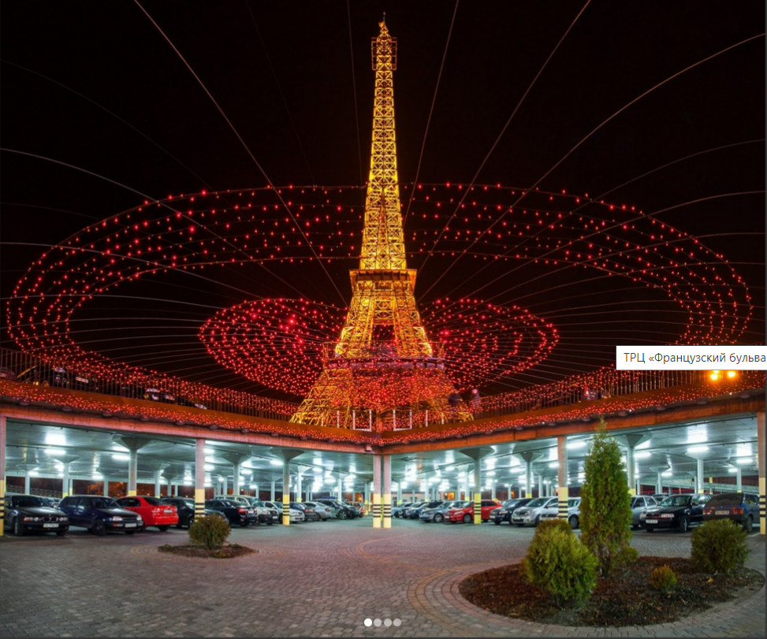
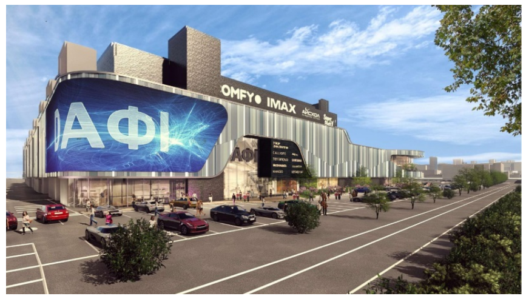
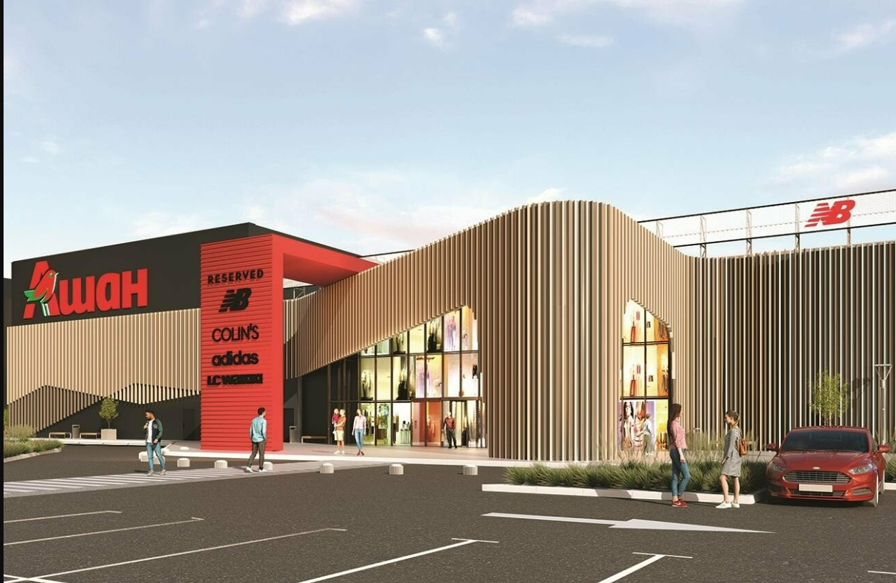
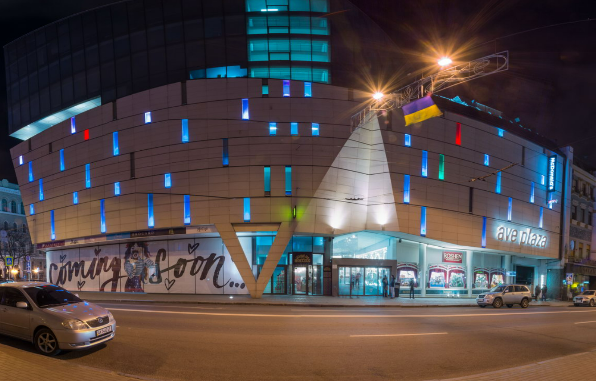

NIKOLSKY Shopping Center is one of the largest shopping centers in Kharkiv, with a total area of 105,000 square meters. m., where more than 150 stores are represented.
NIKOLSKY shopping center is a visiting card of Kharkiv in the very center of the city with powerful components of shopping and leisure.
This is a vertical mall with one gallery, which has direct access from the Maidan Constitution metro station on the -1st floor.
NIKOLSKY shopping mall is focused on fashion, it offers style and glamour, having the best clothing and accessories stores at its disposal.
4,6 *****
French Boulevard Mall

Sizable shopping center featuring an array of stores, casual eateries & a movie theater.
French Boulevard" shopping and entertainment centre is one of the most popular and favourite places for recreation and shopping among Kharkiv residents.
There are a two-stored car park, which is designed for 1150 cars.
4.6 *****
Dafi Shopping Center

The Dafi shopping and entertainment center in Kharkiv is always happy for its guests and customers!
Starting from birth to the most respectable age, each visitor to the Dafi shopping center will find something special in our shopping and entertainment center.
For your attention, the Dafi shopping center presents shops, food establishments - court and recreation, as well as trade and service enterprises, are ready to provide services according to your needs quickly and qualitatively.
Dufi is a trade and entertainment center for your family.
4.5 *****
Karavan

KARAVAN shopping mall in Kharkov: total area 84 000 m²; more than 200 stores of popular clothing and footwear brands; Auchan food hypermarket; Karavan furniture hypermarket; 7D movie theater; ice rink, oceanarium; Fly kids entertainment center.
In 2013, 2014, 2015, 2016, 2017, 2018. KARAVAN shopping mall was recognized as the best shopping and entertainment center in Kharkiv within the national award of Ukraine in the Retail Awards "Consumer's Choice".
4.4 ****
Ave Plaza

AVE PLAZA has all the advantages of a large multi-functional complex that has united shopping galleries, a class A business center, a food court, and a cultural and entertainment area under one roof.
AVE PLAZA is a new reference point for business and culture, located in the central business part of Kharkiv. There are three metro stations nearby (Historical Museum, Constitution Square, Architect Beketov). Positive emotions, bright colors, fullness of life are guaranteed at AVE PLAZA!